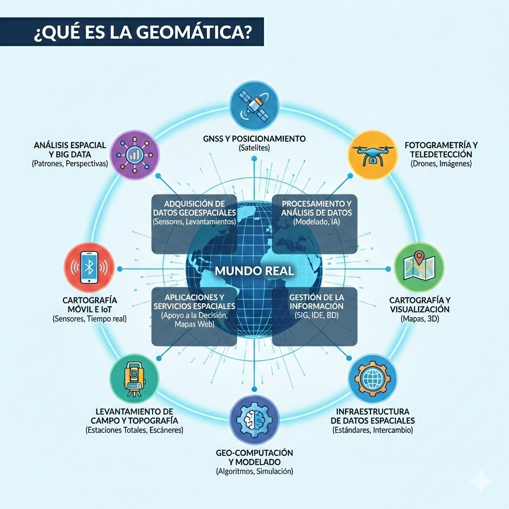

9 ¿Qué es la Geomática?
AVANCES Y TENDENCIAS DE LA GEOMÁTICA
Fundamentos, Disciplinas y Evolución hacia la Inteligencia Territorial
Alexys H. Rodríguez-Avellaneda Ph.D.
FEBRERO 2026 | BOGOTÁ, COLOMBIA
I. El Escenario
El Ecosistema de la Geomática Moderna
La Geomática es la disciplina que integra la ciencia y la tecnología para gestionar el ciclo de vida del dato espacial mediante seis acciones clave:
Capturar
Tratar
Gestionar
Analizar
Interpretar
Utilizar
El objeto de estudio
Información Geoespacial: Datos relacionados con ubicaciones específicas en la Tierra (coordenadas, atributos y tiempo).
“Es la ciencia y la tecnología de la información espacial.”
9.1 El Proceso Geomático
La geomática integra un flujo de trabajo sistemático para transformar la realidad física en conocimiento digital.
Adquisición
- Captura: Obtención de datos brutos (campo, sensores).
- Tratamiento: Procesamiento, limpieza y georreferenciación.
Inteligencia
- Analizar: Procesamiento estadístico y espacial complejo.
- Interpretación: Extracción de patrones y significado real.
Gestión
- Gestionar: Almacenamiento en bases de datos y arquitecturas SIG.
- Utilizar: Aplicación final en la toma de decisiones.
“De la captura del dato a la sabiduría del territorio.”
9.2 Geomática - Palabras más usadas
SIG
Sensores Remotos
Mapas
Información Geográfica
Fotogrametría
GNSS
Geodesia
Big Data
Bases de datos espaciales
Coordenadas
Capas
Análisis espacial
Geoprocesamiento
9.3 Palabras Clave: El ADN de la Geomática
Conceptos fundamentales que definen el campo actual, organizados por su rol en el flujo de trabajo.
Captura
- Sensores Remotos
- Drones (UAV)
- Escáner Láser
Datos
- Coordenadas
- Big Data
- DB Espaciales
Sistemas
- SIG (GIS)
- GNSS
- IDE
Análisis
- Análisis Espacial
- Geoestadística
- GeoIA
Visuliz.
- Webmapping
- Visores
- Cartografía
La integración de estos cinco pilares define el perfil del profesional de la Geomática moderna.
9.4 El Ecosistema de la Geomática Moderna
La convergencia entre el saber científico, las herramientas digitales y la inteligencia territorial.
Ciencias Base
Fundamento teórico.
- Topografía y Geodesia
- Cartografía y SIG
- Fotogrametría
- Teledetección
- Estadística Espacial
Herramientas
Captura y gestión.
- GNSS / GPS Precisión
- Drones y LiDAR
- Escáner Láser 3D
- Cloud Computing
- IoT / Sensores
La Frontera
Innovación y GeoIA.
- Smart Cities
- Gemelo Digital / BIM
- Realidad Aumentada
- VGI / Datos Ciudadanos
- GeoIA (IA Espacial)
“La Geomática es el punto de unión entre el Mundo Físico, el Modelo Digital y la IA.”
9.5

10
II. El Motor Técnico
Ciencias Base y Herramientas de Captura
10.1 Topografía y Geodesia
La Ciencia de la Medición
- Geometría Terrestre: Determinación de coordenadas \(X, Y, Z\).
- Marcos de Referencia: Implementación de sistemas de coordenadas (Datum).
- Modelado del Geoide: Estudio de las irregularidades gravitatorias.
- Escala Local y Global: Desde el levantamiento de un lote hasta el país.
Topografía: “Es la ciencia que estudia el conjunto de principios y procedimientos que tienen por objeto la representación gráfica de la superficie terrestre, con sus formas y detalles, tanto naturales como artificiales” — Wikipedia.
Geodesia: “Es la ciencia que estudia la forma y dimensiones de la Tierra. Esto incluye la determinación del campo gravitatorio externo y la superficie del fondo oceánico, considerando la curvatura terrestre” — Wikipedia.
“Sin una base geodésica, los mapas no son más que dibujos.”
10.2 Cartografía y SIG
El Cerebro del Análisis Territorial
- Modelado: Abstracción y simplificación de la realidad en capas.
- Gestión de Atributos: Conexión entre la geometría y la información alfanumérica.
- Interoperabilidad: Capacidad de integrar datos de diversas fuentes y formatos.
- Visualización: Comunicación de fenómenos espaciales mediante variables visuales.
Cartografía: “Es la ciencia, arte y técnica de representar la superficie terrestre en un plano. Se encarga de la concepción, producción, difusión y estudio de los mapas en todas sus formas” — Wikipedia.
SIG / GIS: “Es un conjunto de herramientas que integra componentes (hardware, software, datos) que permiten la organización, almacenamiento y análisis de grandes cantidades de datos georreferenciados” — Wikipedia.
“La cartografía es el lenguaje; el SIG es el pensamiento que lo genera.”
10.3 SIG Tradicionales: Esencia y Concepto
Para comprender la base de la geomática, debemos diferenciar el medio (el software) de la esencia (el modelo de datos).
Representación Es un modelo abstracto y simplificado de la complejidad del mundo real.
El Error Común Reducir el SIG únicamente al Software. El software es solo la herramienta de operación.
Enfoque de SI Un Sistema de Información especializado con un modelo de datos orientado al espacio.
10.4 SIG Tradicionales: Capacidades y Alcance
Estructura técnica basada en el procesamiento de datos y la geometría discreta.
Capacidades Técnicas: Sistema de bases de datos con indexación espacial y un conjunto de operaciones para manipular, consultar y realizar análisis rápidos de proximidad.
Modelo de Datos: Representación del territorio mediante geometrías discretas.
• Puntos (Nodos) • Líneas (Arcos) • Áreas (Polígonos)
La Limitación Histórica
El mapa como producto final.
El proceso terminaba en la cartografía estática, sin capacidad de análisis dinámico en tiempo real.
10.5

10.6 Fotogrametría y Teledetección
Percepción Remota
- Visión 3D: Reconstrucción de la realidad a partir de pares estereoscópicos.
- Análisis Multiespectral: Ver lo invisible al ojo humano (salud vegetal, agua).
- Satélites: Monitoreo global, continuo y multitemporal del planeta.
- Resolución: Calidad espacial, temporal, espectral y radiométrica.
Fotogrametría: “Técnica cuyo objeto es estudiar y definir con precisión la forma, dimensiones y posición en el espacio de un objeto, utilizando medidas hechas sobre fotografías” — Wikipedia.
Teledetección: “Adquisición de información de un objeto o fenómeno, usando instrumentos de grabación o escaneo que no están en contacto directo (aviones, satélites, boyas)” — Wikipedia.
“Medir el mundo sin necesidad de tocar el terreno.”
10.7 GNSS / GPS de Precisión
Posicionamiento y Sincronización Global
- Multiconstelación: Integración de señales GPS, GLONASS, Galileo y BeiDou.
- Métodos Diferenciales: Uso de RTK y Ntrip para precisiones milimétricas.
- Georreferenciación: Asignación de coordenadas únicas en marcos de referencia mundiales.
- Navegación vs. Precisión: Diferencia crítica entre sensores de consumo y equipos geodésicos.
GNSS: “Es el nombre genérico que engloba a los sistemas que proporcionan posicionamiento geoespacial autónomo con cobertura global. Permite a pequeños receptores electrónicos determinar su ubicación con gran precisión” — Wikipedia.
GPS: “El Sistema de Posicionamiento Global (GPS) es un sistema que permite determinar en toda la Tierra la posición de cualquier objeto con una precisión de hasta centímetros (usando GPS diferencial), aunque lo común son unos pocos metros” — Wikipedia.
“La coordenada es el ancla que une el mundo digital con la realidad física.”
10.8 Drones y LiDAR
Sistemas de Captura Aérea Dinámica
- Plataformas UAV/RPAS: Flexibilidad para vuelos a baja altura y gran detalle.
- Sensores Activos: El LiDAR emite su propia energía para medir distancias.
- Productos Derivados: Nubes de puntos masivas, Ortomosaicos y Modelos 3D.
- Modelado (DSM / DTM / DEM): Capacidad de “filtrar” la vegetación para ver el terreno real.
Dron (UAV): “Aeronave que vuela sin tripulación a bordo. En Geomática, actúa como plataforma aerotransportada para sensores fotogramétricos, LiDAR o cámaras multiespectrales” — Wikipedia.
LiDAR: “Tecnología activa de teledetección óptica que utiliza pulsos de luz láser para medir distancias. Al registrar el tiempo que tarda cada pulso en rebotar y volver al sensor, genera nubes de puntos 3D con coordenadas precisas (X, Y, Z) de la superficie y los objetos.” — Wikipedia.
“Del píxel a la nube de puntos: la reconstrucción total del entorno en alta resolución.”
10.9 Escáner Láser 3D (TLS)
TLS: Terrestrial Laser Scanning
Captura Estática de Ultra-Alta Resolución
- Estacionamiento Fijo: Máxima estabilidad para precisiones milimétricas.
- Barrido 360°: Captura integral de la geometría de una escena desde un punto.
- Ingeniería Reversa: Generación de modelos “As-Built” de alta fidelidad.
- Documentación Patrimonial: Clonación digital de estructuras y monumentos.
Escáner Láser 3D: “Dispositivo que analiza un objeto o escena del mundo real para recolectar datos sobre su forma y, a veces, su apariencia (color). Se utiliza para construir modelos digitales tridimensionales” — Wikipedia.
TLS: “El Escaneo Láser Terrestre (Terrestrial Laser Scanning) es un método de levantamiento que utiliza un haz de luz láser para medir con precisión superficies complejas desde una posición fija en tierra” — Wikipedia.
“La realidad física convertida en geometría digital con precisión milimétrica.”
10.10 Cloud Computing y Big Data
Infraestructura: IaaS / PaaS / SaaS | Datos: Volumen, Velocidad, Variedad
El Salto a la Infraestructura Distribuida
- Escalabilidad On-Demand: Capacidad de aumentar potencia de cálculo según la necesidad del proyecto.
- Almacenamiento de Objetos: Uso de buckets (S3, Cloud Storage) para alojar petabytes de imágenes.
- Serverless Computing: Ejecución de algoritmos sin gestionar servidores físicos (Lambda, Google Functions).
- Ecosistema Cloud-Native: Almacenamiento en COG/Zarr e indexación mediante STAC para descubrimiento eficiente.
Cloud Computing: “Es la disponibilidad bajo demanda de recursos de computación (servidores, almacenamiento). En Geomática, las nubes de AWS, Google Cloud y Azure eliminan la barrera del hardware local” — Wikipedia/Propio.
Google Earth Engine (GEE): “Es una plataforma específica (PaaS) de análisis geoespacial que funciona sobre la infraestructura de Google Cloud. Permite el procesamiento masivo de datos satelitales a escala planetaria” — Wikipedia.
“La nube no es solo el lugar donde guardas los datos, es donde los transformas.”
10.11 IoT y Sensores Georreferenciados
Monitoreo en Tiempo Real: Redes de sensores, Actuadores y Edge Computing
El Pulso del Territorio en Tiempo Real
- Ubicuidad: Despliegue masivo de nodos sensores en ciudades, agricultura e industria.
- Geolocalización del Dato: Cada flujo de información posee una estampa de tiempo y posición.
- Baja Latencia: Transmisión inmediata para sistemas de alerta temprana (inundaciones, sismos).
- Edge Computing: Capacidad de realizar geoprocesamiento básico dentro del mismo sensor.
Internet de las Cosas (IoT): “Red de objetos físicos que llevan incorporados sensores o software con el fin de conectar e intercambiar datos con otros dispositivos a través de Internet” — Wikipedia.
Edge Computing: “Modelo de computación distribuida que acerca el procesamiento y el almacenamiento de datos a la fuente donde se generan (el sensor), mejorando los tiempos de respuesta” — Wikipedia.
“La Geomática pasa de cartografiar el pasado a monitorear el presente vivo.”
11
III. El Marco de Gestión
Ciclo de Vida del Dato e Infraestructuras (IDE)
11.1 Ciclo de Vida del Dato Geoespacial
\[Dato \xrightarrow{\text{Procesamiento}} Información \xrightarrow{\text{Análisis}} Conocimiento\]
1. Adquisición (Dato Bruto) Captura mediante sensores (GNSS, LiDAR, Imágenes). Ejemplo: Coordenadas \(X, Y, Z\) de puntos de calor en un bosque.
2. Gestión y Tratamiento Almacenamiento en Geodatabases y limpieza de errores. Ejemplo: Base de datos espacial de focos de incendio activos.
3. Análisis e Interpretación (Información) Modelado y geoprocesamiento para hallar patrones. Ejemplo: Mapa de velocidad de propagación del fuego.
4. Visualización y Uso (Conocimiento) Mapas y tableros para la toma de decisiones. Ejemplo: Decisión: Priorización de despliegue de brigadas.
11.2 IDE: El Enfoque en el Intercambio
La Geomática evoluciona hacia la estandarización. Ya no basta con tener el dato; hay que saber compartirlo.
- Rol Geomático: Implementación de estándares OGC e ISO.
- Interoperabilidad: Romper los “silos” de información para que los datos fluyan entre instituciones.
- Meta: “Preguntar una vez, usar muchas veces”.
Infraestructura de Datos Espaciales
11.3 IDE: La “Internet” de la Información Geográfica
Una Infraestructura de Datos Espaciales (IDE) no es un software, es un ecosistema de acuerdos y tecnologías para que los datos fluyan sin barreras.
EL PROBLEMA
“Silos” de Información Datos aislados, duplicados y en formatos incompatibles. Cada organismo es una isla.
EL MOTOR (IDE)
Estándares y Acuerdos Reglas comunes (OGC, ISO) que actúan como un “lenguaje universal” para que las máquinas se entiendan.
EL RESULTADO
Interoperabilidad Capacidad de combinar datos de diferentes fuentes en tiempo real. Acceso ubicuo y reutilización.
Objetivo: “Preguntar una vez, usar muchas veces.”
12
IV. La Evolución
De la Cartografía a la Inteligencia Territorial
12.1 De la Cartografía a la Inteligencia Territorial
El paradigma ha evolucionado: dejamos de dibujar el territorio para empezar a simularlo y predecirlo mediante tecnología.
SIG Tradicional El mapa como producto final. Estático y descriptivo.
IDE Interoperabilidad. El dato se comparte bajo estándares (OGC).
Smart Cities Integración de sensores e IoT. Gestión urbana en tiempo real.
Gemelo Digital Modelado dinámico y multidimensional (\(n\text{-D}\)). Sincronización física.
Int. Territorial GeoIA y analítica avanzada para la prospectiva.
13
V. La Frontera Aplicada
Nuevas Tecnologías y Casos de Uso
13.1 Smart Cities: El Sistema Nervioso
Gestión Proactiva: Del plano estático al organismo vivo en tiempo real
La Geomática como Plataforma de Integración
- Sensoramiento e IoT: Los sensores georreferenciados capturan el pulso urbano.
- Flujos Dinámicos: Visualización de tráfico, energía y personas en vivo.
- Operación del Hoy: Pasamos de mapas del pasado a sistemas de gestión del presente.
Movilidad Inteligente: “Optimización de rutas y transporte autónomo basado en redes viales digitales dinámicas que reaccionan a la demanda real” — Propio.
Gestión Ambiental: “Monitoreo de islas de calor, ruido y calidad del aire integrados directamente en el SIG municipal para salud pública” — Propio.
“La ciudad deja de ser un plano estático para convertirse en un flujo constante.”
13.2 Smart Cities: Tecnología y Definición
Infraestructura Digital: IoT, Geofencing e Interoperabilidad
El Territorio como Organismo Conectado
- Sensoramiento e IoT: Los datos “saben” dónde están para dar contexto a la ciudad.
- Geofencing: Perímetros virtuales que disparan acciones automáticas al cruzar límites.
- Resiliencia Urbana: Capacidad de respuesta inmediata ante eventos críticos o emergencias.
- Flujos Dinámicos: Visualización masiva de tráfico, energía y personas en vivo.
Smart City: “Aquella que utiliza el potencial de la tecnología para promover un desarrollo sostenible y mejorar la calidad de vida” — Wikipedia.
Geofencing: “Servicio que utiliza datos espaciales para activar una acción cuando un dispositivo entra en un límite geográfico” — Wikipedia.
“La ciudad deja de ser un plano estático para convertirse en un flujo constante.”
13.3 Gemelo Digital: El Enfoque en la Simulación
La Geomática alcanza su mayor nivel de detalle físico. Creamos una réplica exacta del territorio en el mundo virtual para ensayar el futuro.
MUNDO FÍSICO
DATOS EN VIVO
RÉPLICA DIGITAL
- Modelado Multidimensional: Integración de nubes de puntos, fotogrametría y BIM (\(4D \rightarrow 7D\)).
- Dinámica Evolutiva: No es un mapa estático; es un modelo que permite predecir comportamientos físicos.
13.4 Gemelo Digital y BIM Territorial
Escalas: De la infraestructura al territorio inteligente | Contexto: Geomática Global
Sincronización de la Realidad Geográfica
- Fusión SIG+BIM: Integración del activo individual con su contexto geográfico y ambiental.
- Gemelo Territorial: Réplicas de cuencas, bosques o redes de servicios para simulación de riesgos.
- Flujo Bidireccional: El modelo recibe datos (sensores) y permite actuar (actuadores) sobre el terreno.
Escala Territorial: “Gestiona la complejidad de sistemas interconectados: redes de energía, hidrografía y dinámicas urbanas” — Propio.
Planificación: Permite la toma de decisiones inmersiva sobre un modelo virtual antes de cualquier intervención física.
13.5 Gemelo Digital en la Industria AEC
Metodología: Gestión 7D | Industria: Architecture, Engineering & Construction
Ciclo de Vida y Gestión del Activo
- Colaboración AEC: Integración de flujos de trabajo entre arquitectura, ingeniería y construcción.
- Mantenimiento Predictivo: Uso de IoT para anticipar fallas en la infraestructura operativa.
- As-Built Digital: Entrega de un clon digital exacto del activo para su gestión a largo plazo.
BIM: “Metodología colaborativa que centraliza toda la información de un proyecto en un modelo digital” — Wikipedia.
Dimensiones: “4D (Tiempo), 5D (Costo), 6D (Sostenibilidad) y 7D (Gestión de Activos/Mantenimiento)” — Propio.
13.6 Realidad Aumentada Geoespacial
Visualización In-Situ: Información invisible superpuesta al mundo físico
El Mapa sin Papel ni Pantalla
- Visualización de Redes: Ver tuberías y cables subterráneos directamente sobre la calle.
- Proyectos Futuros: Visualizar un edificio o puente en su ubicación real antes de la obra.
- Guiado de Precisión: Capas SIG superpuestas al paisaje mediante móviles o cascos AR.
- Navegación Indoor: Posicionamiento y guía dentro de infraestructuras complejas.
Realidad Aumentada: “Tecnología que permite superponer elementos virtuales sobre nuestra visión de la realidad, integrando datos en tiempo real” — Wikipedia.
Interacción Espacial: “Es la capacidad del usuario para manipular y visualizar datos geográficos directamente en el entorno físico que lo rodea” — Propio.
“La AR elimina la barrera entre el mapa de la oficina y la realidad del terreno.”
14
VI. La Cúspide
GeoIA e Inteligencia Territorial
14.1 GeoIA: AI + Geografía
Automatización masiva: Machine Learning, Computer Vision y Analítica Predictiva
El Cerebro del Análisis Espacial
- Extracción Automática: Identificación de objetos (casas, vías, cultivos) en imágenes.
- Modelado Predictivo: Algoritmos que predicen la propagación de incendios o inundaciones.
- Deep Learning: Redes neuronales aplicadas al procesamiento de nubes de puntos y píxeles.
- Minería de Datos: Descubrimiento de patrones ocultos en bases de datos espaciales masivas.
GeoIA: “Es una disciplina emergente que utiliza métodos de inteligencia artificial, como el aprendizaje profundo, para facilitar la resolución de problemas en las geociencias” — Wikipedia.
Machine Learning: “Es el campo de la inteligencia artificial que dota a las computadoras de la capacidad de aprender de los datos espaciales sin ser programadas explícitamente” — Wikipedia.
“La GeoIA transforma el ‘¿qué pasó?’ en ‘¿qué pasará?’.”
14.2 Inteligencia Territorial: El Enfoque Predictivo
Evolución: Del modelo estático a la sabiduría del territorio | Ciclo: Observar → Anticipar
El valor no reside en el modelo o en el visor, sino en la capacidad de transformar información geoespacial en conocimiento para reducir la incertidumbre.
GEOMÁTICA
I. ARTIFICIAL
INTELIGENCIA TERRITORIAL
La era de la decisión asistida
Gestión Reactiva: Esperar a que el evento ocurra para analizar sus consecuencias en el mapa.
Gestión Anticipatoria: Interpretar patrones masivos para decidir antes de que el impacto suceda.
14.3 Inteligencia Territorial: Del Visor a la Acción
Aplicaciones de Alto Impacto: Gestión de Emergencias, Clima y Planificación
Objetivos de la Inteligencia Territorial
- Anticipar escenarios: Modelar el “qué pasaría si…” con precisión algorítmica.
- Evaluar impactos: Medir consecuencias antes de ejecutar una obra o política.
- Priorizar actuaciones: Decidir dónde es más crítico invertir recursos públicos.
- Instrumento de Gestión: La tecnología deja de ser el fin y se convierte en el medio.
Reto del Cambio Climático: La IT permite adaptar los territorios mediante la simulación de riesgos multitemporales.
Gobernanza: Poner la información espacial al servicio de quienes deciden para generar mayor respaldo social.
15
¿PREGUNTAS?
Hacia una Inteligencia Territorial Colectiva
Alexys H. Rodríguez-Avellaneda Ph.D.
geocorp@geocorp.co
in/alexyshr
https://geocorp.co/
¡MUCHAS GRACIAS!